Important to learn · exam keywords
Arrow keys to move · Esc to close
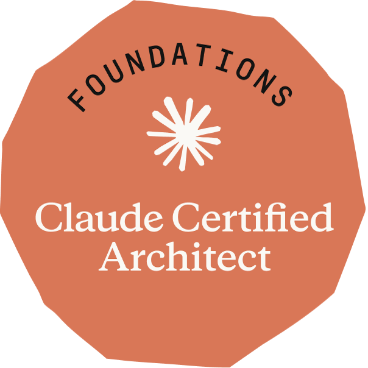
The whole certification as bullets and pictures, with the official exam keywords and the real situations behind each one.
Keep these on your phone too?
We email you one link. No password, and no newsletter unless you ask for one.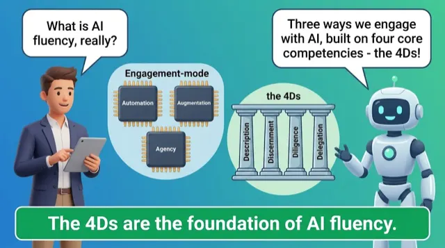
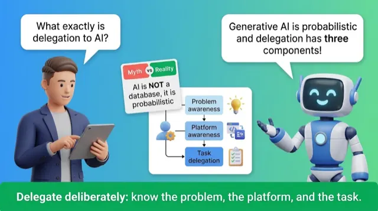
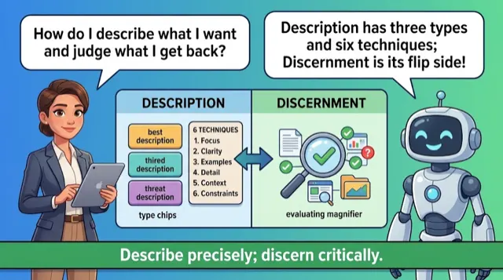
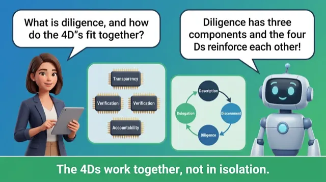
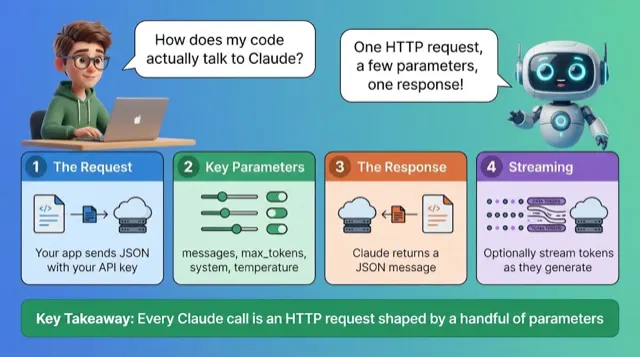
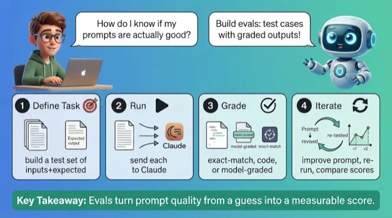
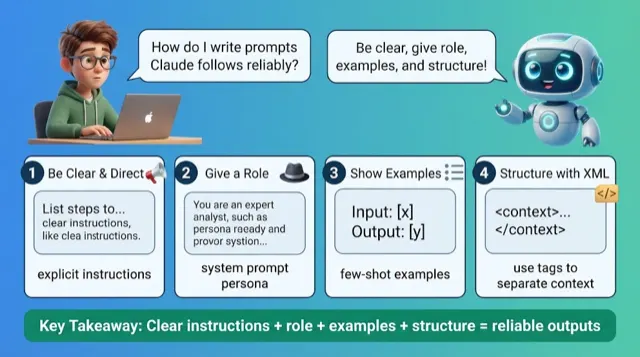
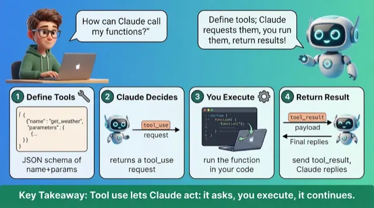
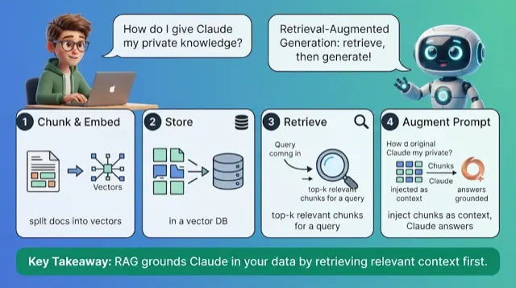
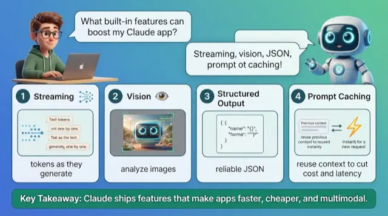
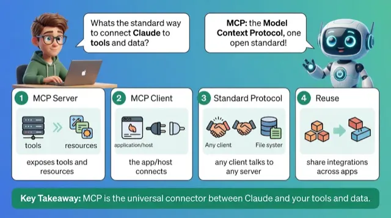
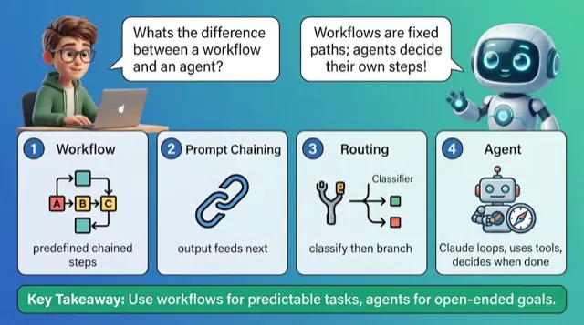
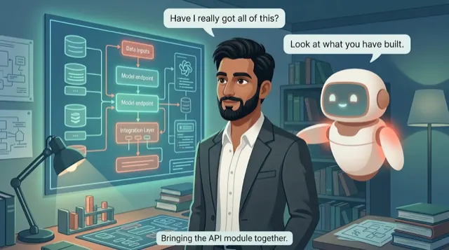
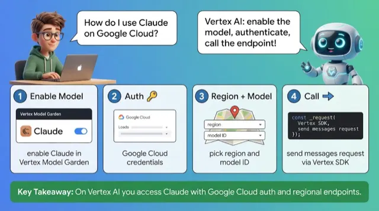
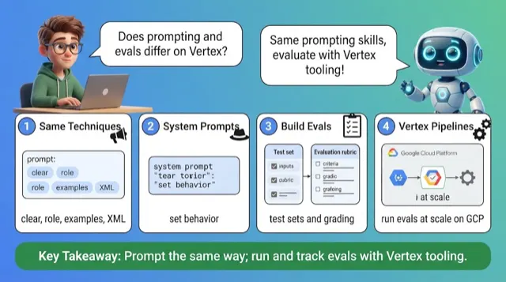
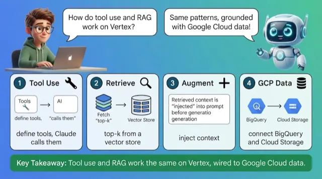
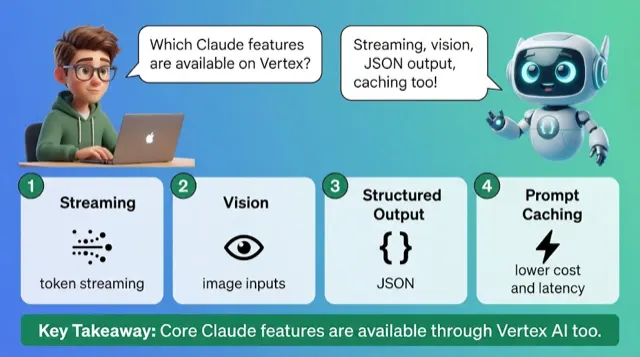
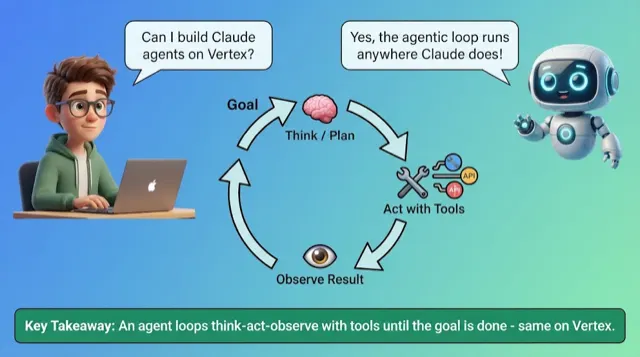
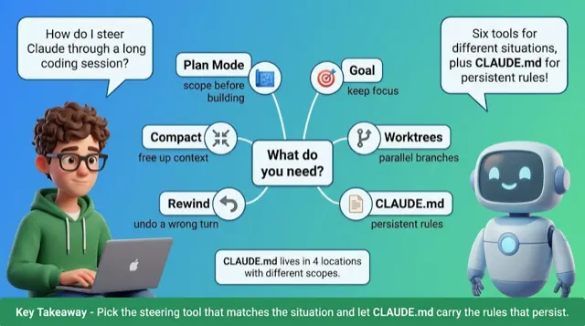
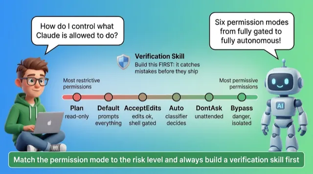
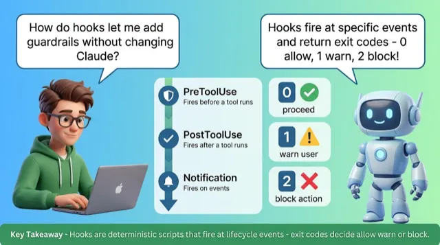
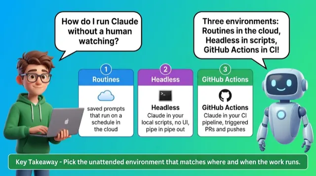
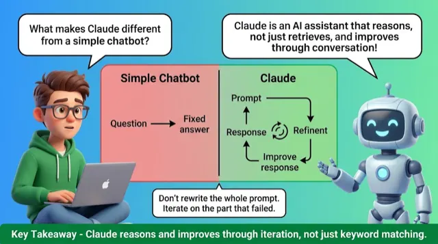
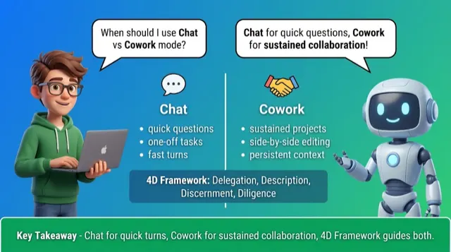
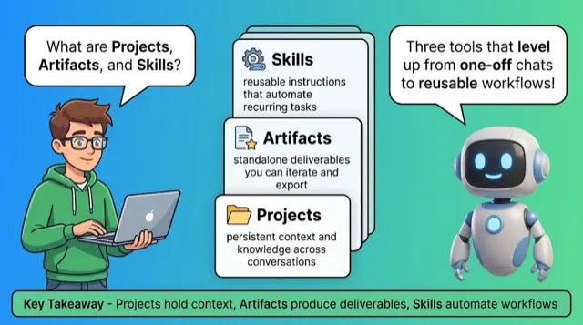
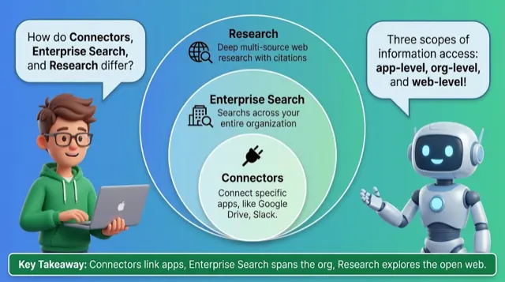
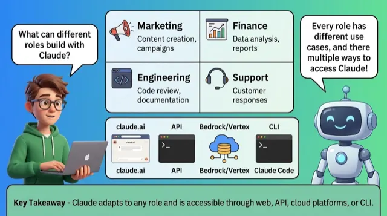
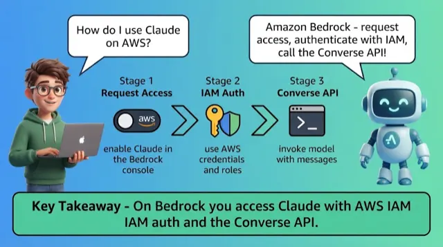
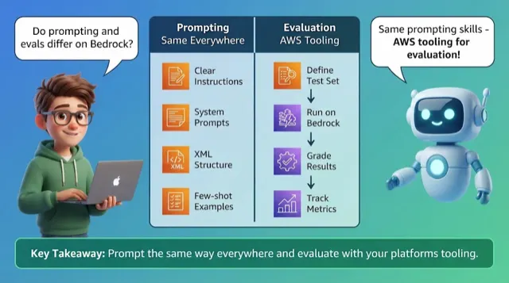
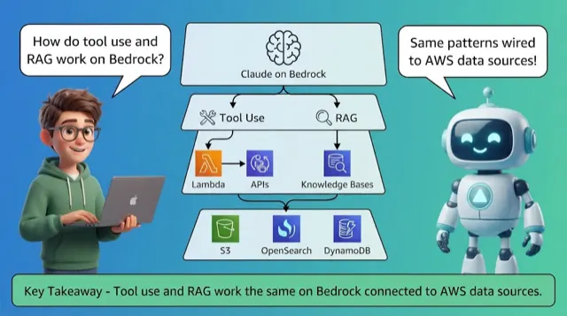
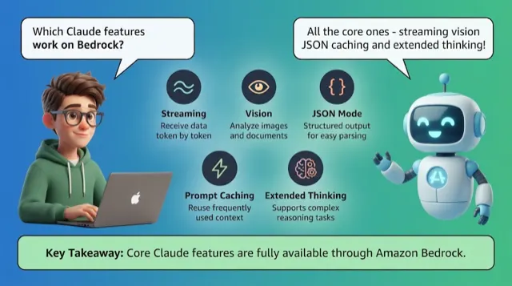
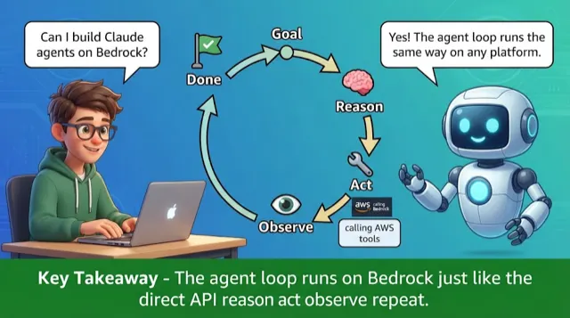
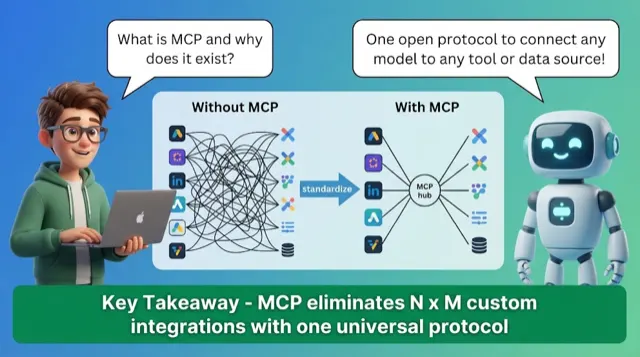
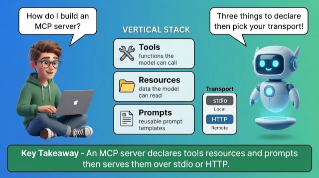
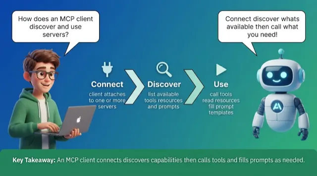
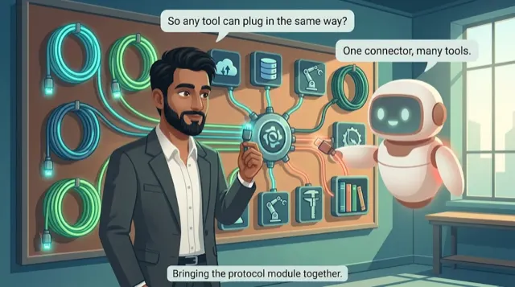